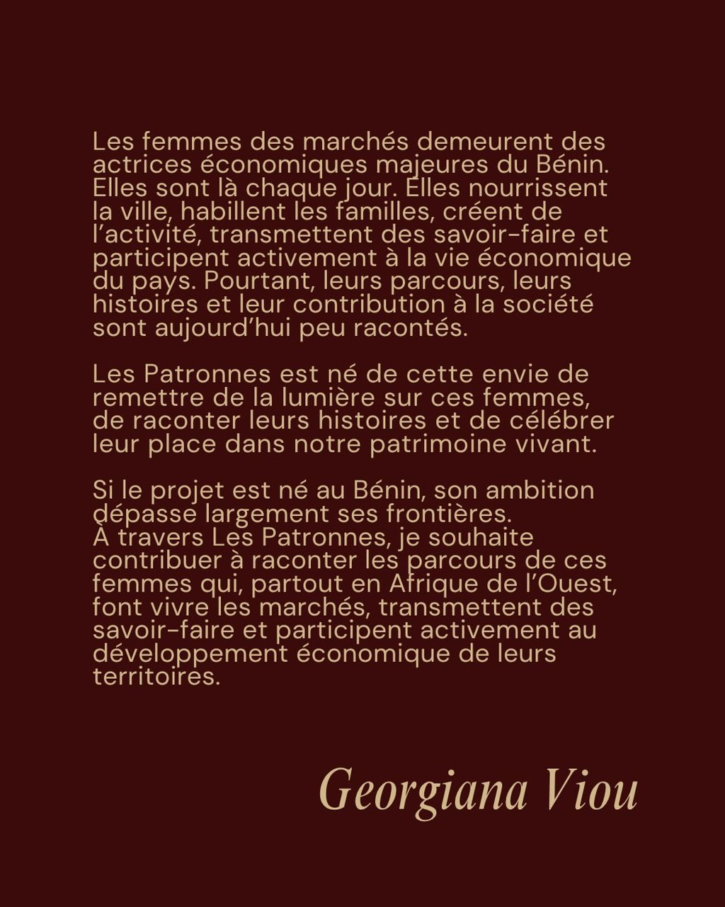
Stop 01
Faire archive
Le projet part d’une conviction : les femmes des marchés sont des actrices économiques et culturelles majeures, dont les visages et les histoires méritent d’être conservés, regardés et transmis.
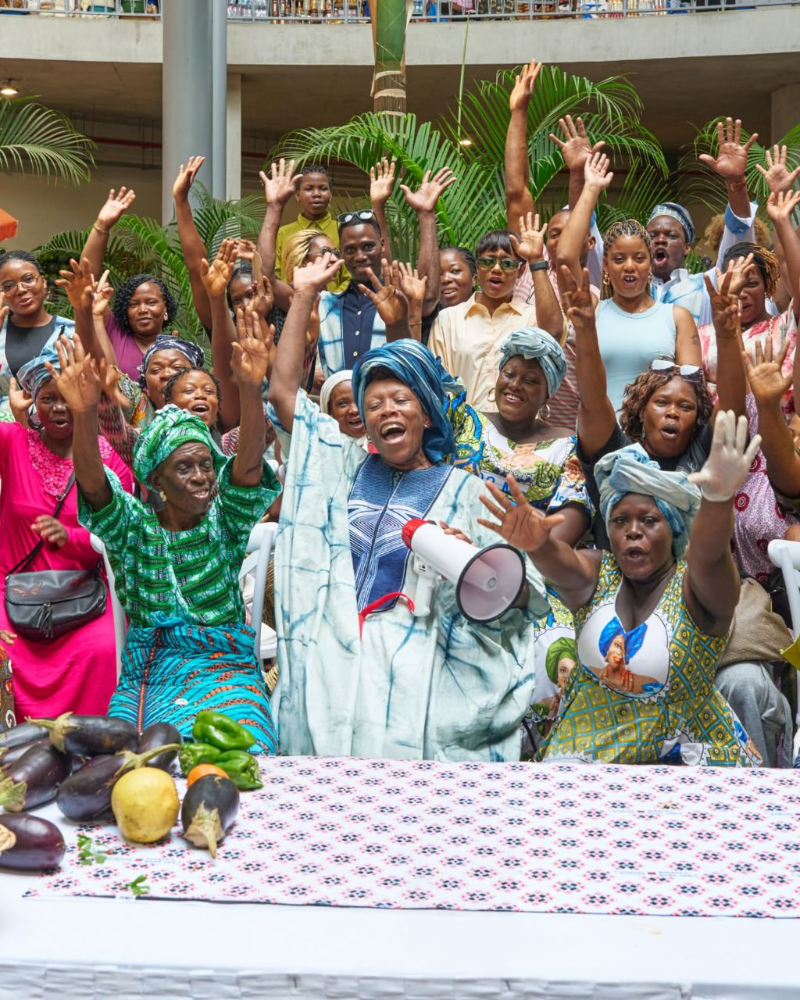
Cotonou, Bénin
À Cotonou, une cheffe étoilée et un collectif de femmes font de la créativité un levier pour réécrire l’histoire des marchés d’Afrique de l’Ouest.
Entrer dans le récitLe concept
Les Patronnes est un projet éditorial et culturel imaginé par Georgiana Viou pour célébrer les femmes qui font vivre les marchés béninois. Celles qui vendent, cuisinent, négocient, transmettent et, par leur travail quotidien, tiennent une part essentielle de la ville.
La gastronomie, la mode et la photographie y deviennent des outils de valorisation. Elles déplacent le regard : l’étal devient une scène, le marché une galerie, la table un lieu d’écoute. Les Patronnes ne raconte pas seulement des parcours ; le projet leur donne une présence, une mémoire et une place à hauteur de leur importance.
Le parcours

Stop 01
Le projet part d’une conviction : les femmes des marchés sont des actrices économiques et culturelles majeures, dont les visages et les histoires méritent d’être conservés, regardés et transmis.
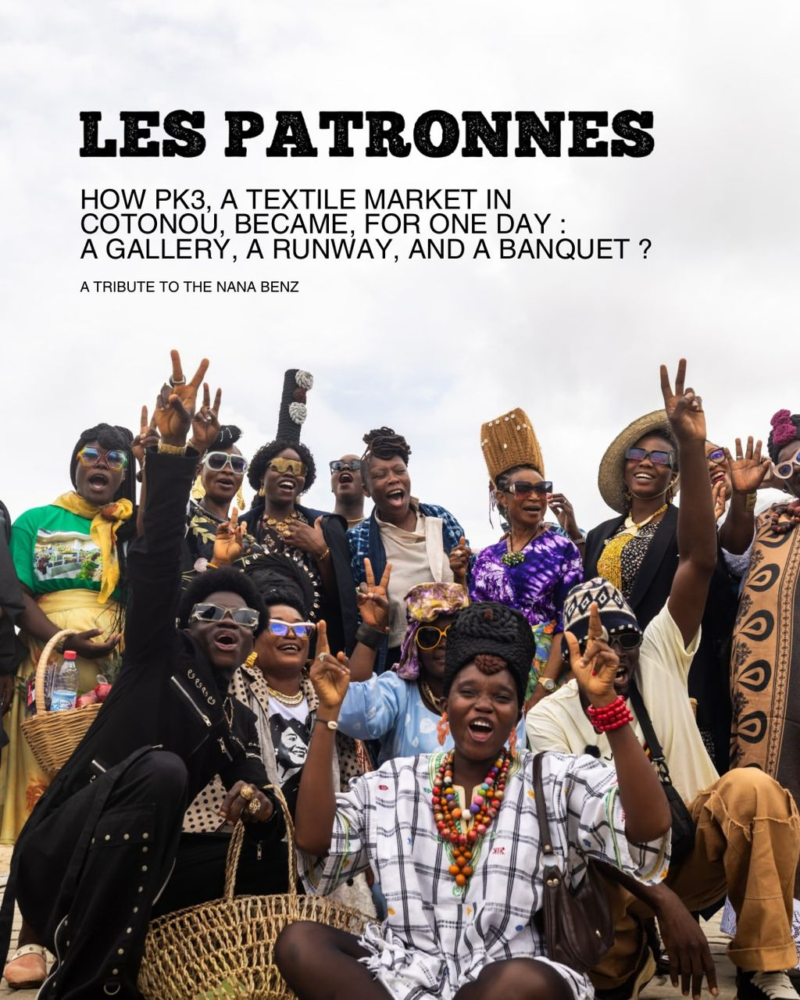
Stop 02
Le marché de PK3 devient, le temps d’une journée, une galerie à ciel ouvert, un podium et une immense table de banquet. Un hommage vivant aux commerçantes du textile et à l’héritage des Nana Benz.
Archive vivante
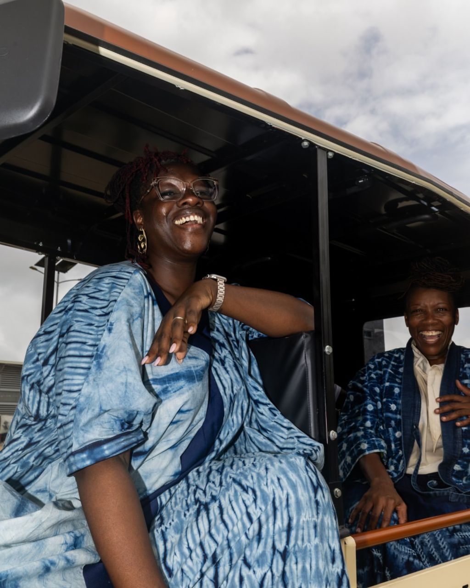
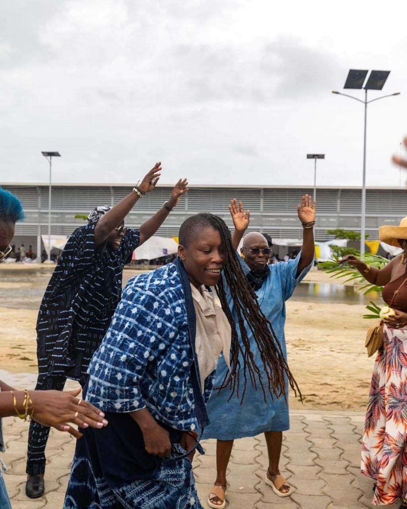
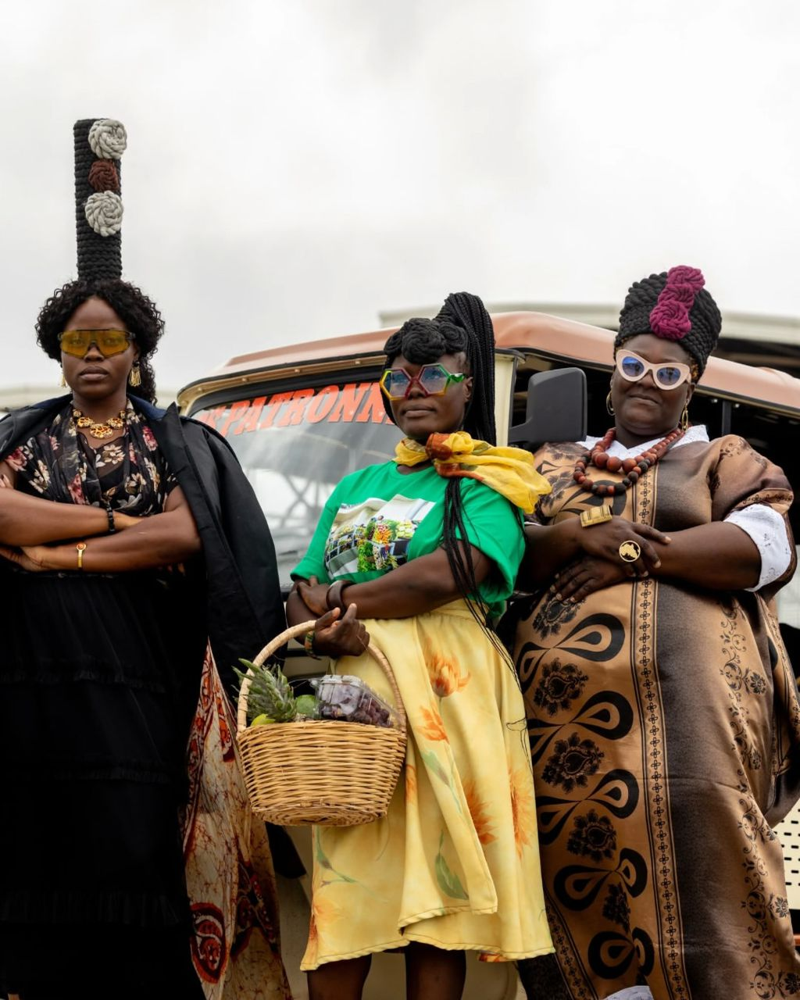
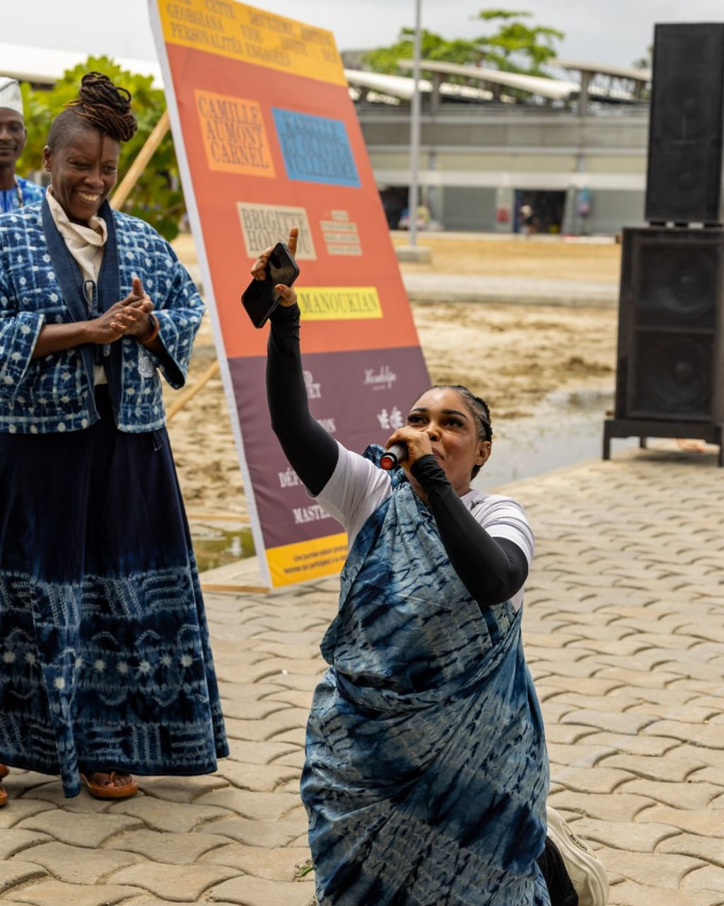
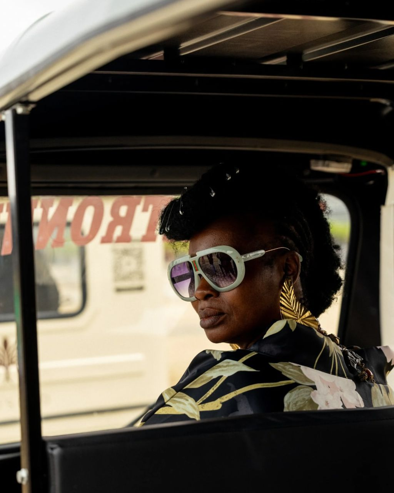
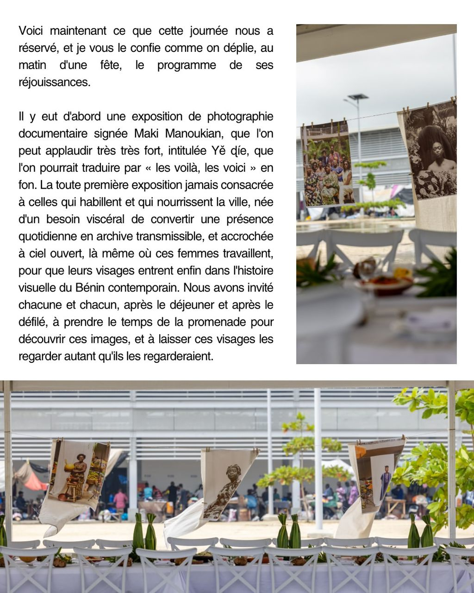
Celles qui portent le projet
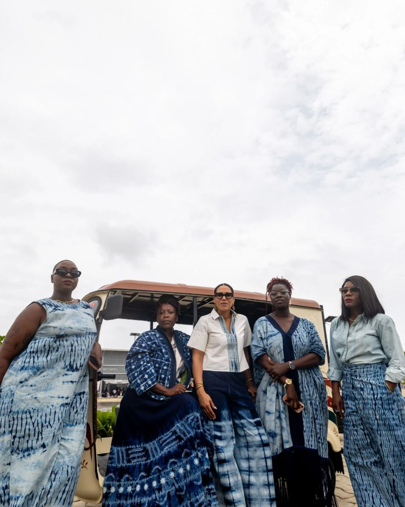
Celles qui accueillent, relient et donnent le ton de la journée.
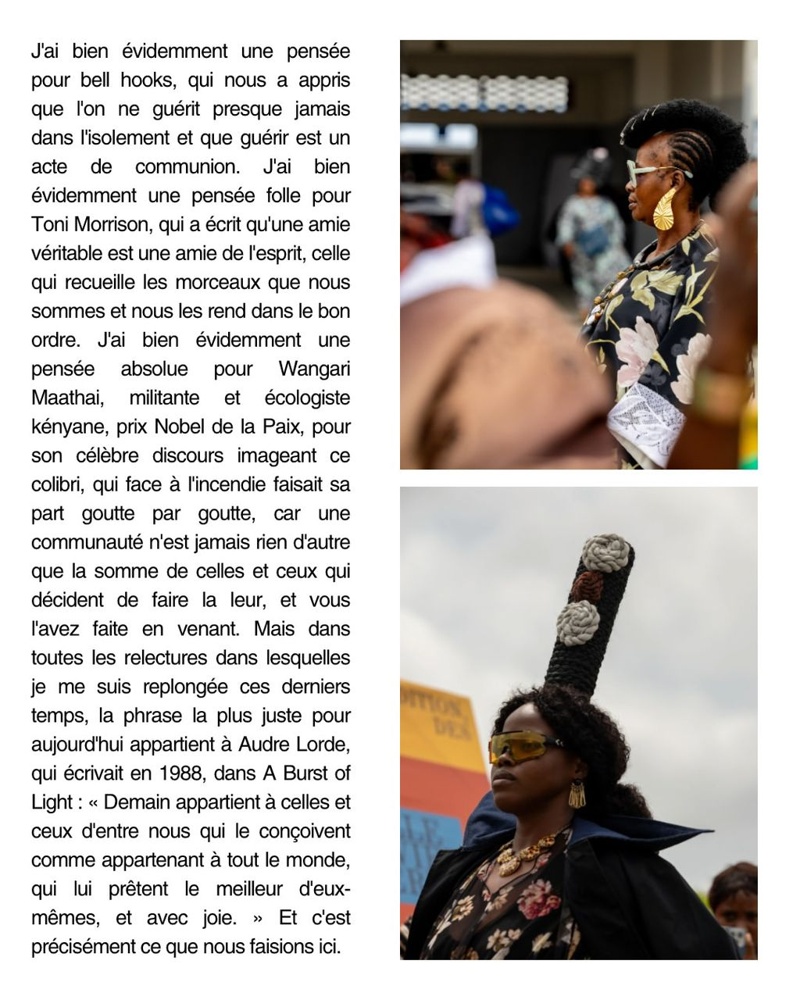
Des présences singulières, réunies par le désir de transmettre.
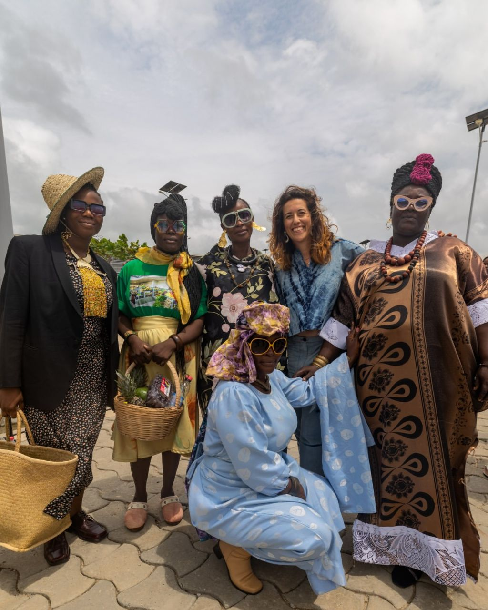
Une communauté qui transforme la reconnaissance en force partagée.
Suivre le mouvement
Pour suivre Les Patronnes, proposer un partenariat ou recevoir le dossier presse, prenez part à la conversation.
← Retour à l’accueil